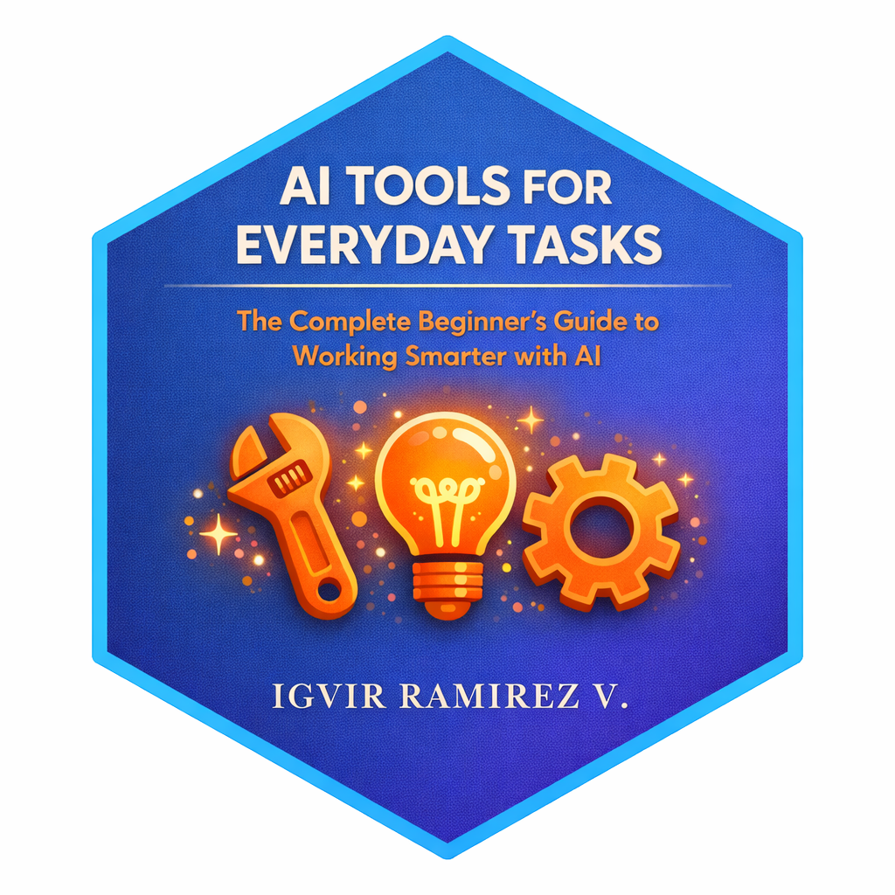
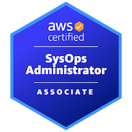

A Few Accomplishments
We discovered that education is not something which the teacher does, but that it is a natural process which develops spontaneously in the human being.
Maria Montessori.
My goal is to keep learning and keep my skills up to date, I believe that education is not limited to just knowledge from books, but can also be obtained through practical experiences. And every time you learn something new, a battle has been won.
It is important to celebrate every little victory. You can find a full list of my badges on Credly but some of the most recent I have achieved are here:

AI Tools - A Practical Guide
A practical book about Artificial Intelligence tools for professionals and developers.
Explore the best AI tools available, how to integrate them into your workflow,
and leverage their potential to boost productivity and solve complex problems.

AWS Certified AI Practitioner
I've achieved my sixth AWS certification, AWS Certified AI Practitioner.
This certification validates my knowledge of AI/ML fundamentals and AWS AI services,
enabling me to design and implement AI-powered solutions.

AWS Certified SysOps Administrator – Associate
I’ve just achieved my fifth AWS certification, AWS Certified SysOps Administrator.
This new certification will further enable me to optimize cloud operations and drive innovation.
AWS Certified Developer - Associate
The fourth certification with AWS. I am now a certified AWS Developer Associate, starting a new path in December 2023.
AWS Certified Solutions Architect - Professional (SAP)
I successfully complete my Solution Architect Certification on December 2022.
AWS Certified Solutions Architect - Associate (SAA)
Previously, I completed my Solution Architect Certification on October 2021.
AWS Certified Cloud Practitioner (CLF)
It was my first AWS Certification and I am happy to share it.
TOGAF® 9 Foundation
This certification is about the core principles of Enterprise Architecture and the
TOGAF Standard.
GBM Special Powers
A GBM recognition for those who were willing to give a little more of themselves in
the
most difficult moments, those who put their superpowers at the service of a higher
goal.